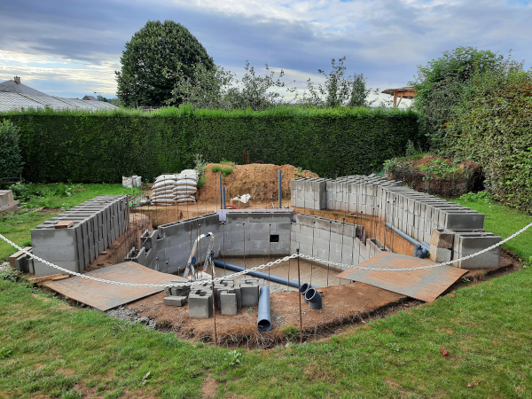
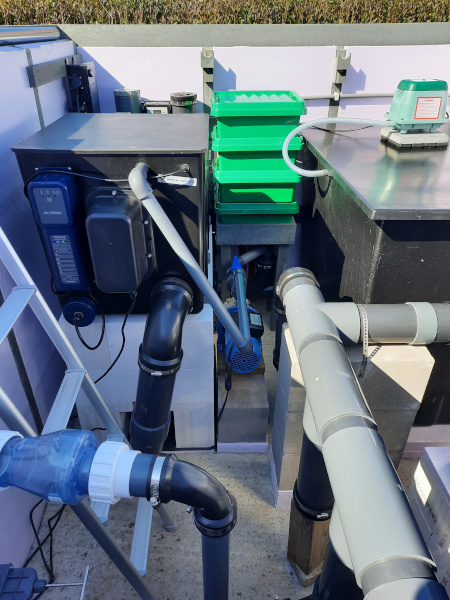

Koivijver
Eenmaal gebeten door de vijver microbe kan een tweede vijver niet lang op zich laten wachten. Dit wil nog niet zeggen dat de eerste spadesteek al gegeven is.
Nu de trampoline niet meer gebruikt wordt, lijkt dit een goede plaats te zijn voor deze tweede vijver. De koivijver komt weliswaar wat dichter naar het huis toe dan de trampoline waardoor deze goed zichtbaar is vanaf het terras of vanuit de veranda. De achthoekige vorm blijft behouden en in de zijde het dichtst naar het huis toe komt een raam opdat men de koi kan zien zwemmen vanop afstand. De vijver is wat men noemt 'verhoogd' en zal 70 cm boven het maaiveld uitkomen. Een binnendiameter van 4 m (d.w.z groter dan de trampoline met zijn diameter van 3,5 m) en een diepte van ongeveer 180 cm geeft een inhoud van 20 000 l.
(9 juni 2019)
Nu het ontwerp grotendeels vastligt, wil dit nog niet zeggen dat de graafwerken kunnen aanvangen. Bij een koivijver kan het belang van een filter niet onderschat worden en dient er ook hiervoor een plaats gevonden te worden. Dus eerst nog wat voorbereidende werken of anders gezegd ... opruimen en plaats vrijmaken voor de filter aan de composthoop. Door de haag zal de filter ook aan het oog onttrokken worden.
(9 juni 2019)
De voorbereidingen gaan gestaag verder en de trampoline heeft plaats moeten maken...

(16 juni 2019)
Om een beter idee te krijgen van de vijver en vooral de glooiing van het terrein werd gebruik gemaakt van betonijzeren 'paaltjes' en een ketting. Alles werd netjes uitgezet met behulp van een waterpas en het stuk karton geeft de grootte van het raam weer. En dan komt men tot de vaststelling dat het langste paaltje 31 cm langer is dan het kortste.
(4 augustus 2019)
Nu het referentieniveau van 1500 mm is uitgezet, kunnen de graafwerken principieel aangevat worden.
(7 augustus 2019)
Terwijl het wachten is op de graafwerken, is ook het referentieniveau uitgezet voor de filterkamer en wordt de wachtbuis voor de elektriciteit en het computernetwerk op een diepte van 50 ... 55 cm ingegraven. Gelukkig was er reeds een aansluitpunt en gedeeltelijke wachtbuis hiervoor voorzien tijdens de bouw van het tuinhuis.

(27 augustus 2019)
Ook hier duiden betonijzeren 'paaltjes' de grootte van de filterkamer aan. Ondertussen zijn ook de sleuven uitgegraven voor de 2 x 110 mm toevoerleidingen naar de filterkamer (van boven naar onder) en de 3 x 63 mm retourleidingen van de pompen (van links naar boven). De diepte van deze sleuven komt overeen met de bodem van de koivijver. De wachtbuis voor elektriciteit aan de koivijver moet ook verder getrokken worden.
(3 september 2019)
Met het juiste 'gereedschap' was de vijver op een halve dag uitgegraven (laten doen) en mag het resultaat gezien worden.
(30 september 2019)
(30 september 2019)
Als het in België nooit zou regenen, is een hele constructie met dekzeil niet nodig. Maar het is de bedoeling dat de vijver pas gevuld wordt met water nadat de 3D vijverfolie geplaatst is.
(5 oktober 2019)
Ondertussen zijn twee polyester vijverbakken geleverd waarvan de grootste dienst zal doen als bewegend bed filter. De kleinste vijverbak zal gevuld worden met Siporax als statisch bed filter of zoals het soms genoemd wordt een Bakki river. Naast de vijverbakken is er ook heel wat ander materiaal aangekocht.
(7 december 2019)
De sleuf voor de filterleidingen is verder uitgegraven tot aan de vijver. Het stuk onder de haag zal pas op het laatste moment uitgegraven worden.
(15 februari 2020)
Ondertussen zijn de hoekpunten van de achthoekige vloerplaat voor de vijver uitgezet. Dit zal het op de juiste plaats plaatsen van de bekisting een stuk eenvoudiger maken.
Na eerst de half ingestorte sleuven terug uitgegraven te hebben, zijn er enkele vertikale sleuven gemaakt voor bv. de luchttoevoer naar de beluchte bodemdrain (links) en de retourleiding van de plantenfilter naar een wanddoorvoer onder 45° (rechts).
(14 maart 2020)
De eerste stappen gezet in het plaatsen van de bodemdrain en de luchttoevoer.
(21 maart 2020)
De sleuven voor de filterleidingen zijn met mekaar verbonden onder de ligustrumhaag door en voor de zekerheid de grond toch wat ondersteund met een soort 'hangmat'.
(4 april 2020)
Ondertussen is de bodemdrain aangesloten op de eerste 110 mm toevoerleiding en de luchttoevoer is nu ook gelijmd.
(11 april 2020)
Na vier dagen zwoegen liggen alle leidingen er. En ... de wachtbuis voor de elektriciteit werd niet vergeten. De volgende stap is nu alles zorgvuldig aanaarden/aanwateren maar daarvoor dienen eerst alle leidingen met water gevuld te worden opdat ze niet gaan drijven.
(14 april 2020)
(14 april 2020)
En alles is zorgvuldig aangeaard/aangewaterd. Tergelijkertijd is de bodem voor de filterkamer op hoogte afgegraven.
(19 april 2020)
De laatste stap vooraleer het beton geleverd mag worden: bekisting, bouwfolie en betonnetten.
(1 juni 2020)

(1 juni 2020)
Naast de levering van het beton zijn de stapelblokken ook toegekomen. Eerst alles wat laten uitharden en dan kan het bouwen/stapelen beginnen.
(3 juni 2020)
(3 juni 2020)
Vooraleer te starten met het optrekken van de muren zijn de retourleidingen verdergetrokken alsook de toevoerleiding van de skimmer. Enkel de stukken naar boven of doorheen de muren ontbreken nog. Voor het gebruiksgemak is ook de elektriciteit al tot aan de vijver getrokken. En zonder dekzeil mag een dompelpomp niet ontbreken.
(14 juni 2020)
De nodige betonijzers als vertikale bewapening zijn geplaatst d.w.z. de gaten in de vloerplaat zijn geboord en alle betonijzers zijn chemisch verankerd. Voor de veiligheid hebben ze allemaal een beschermkapje gekregen. Om een idee te krijgen van de juiste vorm ligt de eerste laag stapelblokken er al los in. De volgende stap is deze waterpas te plaatsen met behulp van houten spieën en eventueel wat bij te sturen om een zo goed mogelijke achthoek bekomen. Dan kunnen ze kant per kant in de mortel gelegd worden.
(21 juni 2020)
Ondertussen ligt de eerste laag in de mortel en zijn de stapelblokken reeds half gevuld met beton. Als het nu goed regent, ontstaat er een vijver ... dus pompen. Nu kunnen de volgende lagen gestapeld worden en waar voorzien de nodige doorvoeren geplaatst worden.
(19 juli 2020)
De eerste wanddoorvoer is geplaatst en doordat de stapelblokken met beton gevuld zijn, zit deze muurvast ... enkel nog een beetje afwerken alias opvoegen.

(25 juli 2020)
Daar het water er onder 45° uitstroomt m.a.w. evenwijdig aan de volgende muur van de achthoek en er op dezelfde plaats in de muur er recht tegenover ook zo'n doorvoer zit, zou er draaiende waterstroming moeten ontstaan. In combinatie met een afhellende bodem en de beluchte bodemdrain zou de bodem proper moeten blijven.
(26 juli 2020)
Vanaf nu zullen de verschillende werkjes elkaar stap voor stap opvolgen: XPS isolatie plaatsen, aanaarden en aanwateren, en terug twee lagen stapelblokken. Daar waar nodig worden de nodige retourleidingen in de muur geplaatst.
(1 augustus 2020)
De werken vorderen langzaam ... een hittegolf van 12 dagen is niet niets.

(20 augustus 2020)

Vandaag twee speciale werkjes gedaan nl. de filterleiding van de skimmer gelegd en hetzelfde voor de retourleiding naar de trickle toren. Om het zicht zo goed mogelijk te behouden m.a.w. geen zichtbare leidingen, dienden beide leidingen in de muur ingewerkt te worden. Hiervoor moest de skimmer eerst tijdelijk op zijn juiste positie gemonteerd worden en krijg je onmiddelijk een goed idee hoe diep de vijver eigenlijk is.
(22 augustus 2020)
De vijfde laag is klaar d.w.z. de stapelblokken zijn gevuld met beton tot halfweg deze laag. De filterleiding van de skimmer zit nu zodanig verankerd dat deze niet meer ondersteund hoeft te worden.
(30 augustus 2020)
Op naar laag 6 en 7 ... de laatste volledige lagen voor het raam.
Met behulp van een aantal restjes stapelblokken kan nu de juiste grootte van het raam uitgezet worden.
(5 september 2020)
De volgende twee lagen zijn nu ook volgestort met beton (uiteraard de bovenste laag maar voor de helft)
(19 september 2020)
En hier is dan de eerste foto van de vijver op hoogte met rechts een lege plek zonder stapelblokken.

(20 september 2020)
Plotseling was de herfst daar met bakken regen. Het heeft dus even geduurd m.a.w. wachten op een voldoende lange periode dat het niet regent alvorens de laatste laag volgestort kon worden. Men zou eigenlijk kunnen stellen dat de ruwbouw klaar is.
(4 oktober 2020)
Nu het wachten is op de profielen in gerecycleerde kunststof, is het werk even verschoven naar de filterkamer. Als eerste is het waterniveau op basis van de markeringen op de skimmer opnieuw uitgezet. In een volgende stap kunnen de trommelfilter, het bewegend bed filter en de statisch bed filter op hoogte geplaatst worden. Hierbij is eerst gebruik gemaakt van een XPS isolatieplaat van de juiste dikte die o.a. de oneffenheden in de betonnen vloerplaat opvangt, en dan voor de rest cellenbetonblokken.
(17 oktober 2020)
Zolang de wanden er nog niet staan, is het een stuk eenvoudiger om alles aan te sluiten. Zo is het wel nog even wachten om alles vast te zetten.
(31 oktober 2020)
De eerste wanden in gerecycleerde kunststof staan er en zijn al gedeeltelijk geïsoleerd. Beide elementen zouden ongevoelig moeten zijn voor het vocht eigen aan de filter.
(6 november 2020)
Drie wanden ... geplaatst en volledig geïsoleerd. De linker wand is enkele centimeters hoger opdat het dak goed afwatert. De vierde wand zal voorlopig nog niet geplaatst worden om de toegang te vereenvoudigen.
(7 november 2020)
En dan tenslotte het dak in verzinkte profielplaten (met dakafwerking).
(8 november 2020)
(21 november 2020)
Ondertussen is ook het grootste verlijmd stuk, de 'collector', geïnstalleerd dewelke het water na het bewegend bed over de verschillende pompen en het statisch bed filter verdeelt. Er is reeds een extra aftakking voorzien voor een toekomstige aansluiting van een eventuele eiwitafschuimer.
(21 november 2020)
Doordat de vierde wand geplaatst is, kunnen de profielplaten extra ondersteund worden met behulp van twee buizen om zo de overspanning sterk te verkleinen en doorplooien te vermijden bij hevige sneeuwval. De verschillende stekkerverbindingen kunnen veilig opgeborgen worden in de op hoogte gebrachte groene DRiBOX verdeeldozen.
(28 november 2020)
Na het juiste telefoontje was de RVS kader voor het vijverraam binnen de week klaar. En een weekje later waren alle gaten volgens de regels van de kunst erin geboord om de kader vast te zetten en de EPDM folie er tussen te klemmen.
(23 januari 2021)
(30 januari 2021)
De filter wordt stap voor stap afgewerkt als deel van de laatste voorbereidingen alvorens de vijver te kunnen vullen met water. Zo zijn de pompen nu ook verbonden met de retourleidingen. In de leiding naar het plantenfilter is een terugslagklep geplaatst.
(6 maart 2021)
En de hogedrukpomp is gekoppeld met de sproeibuis van de trommelfilter.

(20 maart 2021)
De derde polyester vijverbak die als plantenfilter dienst zal doen, is nu geïntegreerd in de bijbehorende retourleiding.
(3 april 2021)
Aprilse grillen zorgen heel vroeg op de ochtend voor een mooi sfeerbeeld.
(7 april 2021)
Alle beetjes helpen om de grenzen van een enkele bodemdrain te verleggen: beluchten, twee wanddoorvoeren onder 45° recht tegenover mekaar en nu ook een afhellende bodem (tenminste de eerste 5 sectoren van de achthoek).
(24 april 2021)
En een week later ... een volledige afhellende bodem.
(1 mei 2021)
Ondanks dat het weer niet wilde meewerken toch gebruik gemaakt van het lange weekend om de 3D vijverfolie te leggen. Maar dit wil zeggen dat eerst een beschermdoek dient gelegd te worden op zowel de bodem en als op de zijwanden. Met de juiste lijm en wat duct tape blijft alles netjes op zijn plaats.
(13 mei 2021)
(13 mei 2021)
De vijverfolie is bevestigd aan de bodemdrain met voldoende kit en de volgende stap is nu de bodem onder water zetten om dan de plooien beginnen weg te werken.
(13 mei 2021)
Een volgende mijlpaal is genomen ... het eerste water in de vijver.
(14 mei 2021)
Het vijverraam staat erin en nu kan het vullen pas echt starten.
(23 mei 2021)
Enkele regenbuien later (m.a.w. pas het volgende weekend) staat het water op het juiste niveau en na de nodige aanpassingen loopt het water ook door de filter. Op dit moment werkt enkel nog maar het mechanisch gedeelte van de filter. Een tweede luchtpomp (voor de beluchte bodemdrain) is in bestelling nadat een debietstest is uitgevoerd met de luchtpomp van het bewegend bed gedeelte. Daarna is de tijd aangebroken om het biologisch gedeelte van de filter op te starten.
(31 mei 2021)